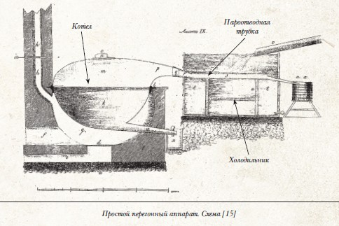
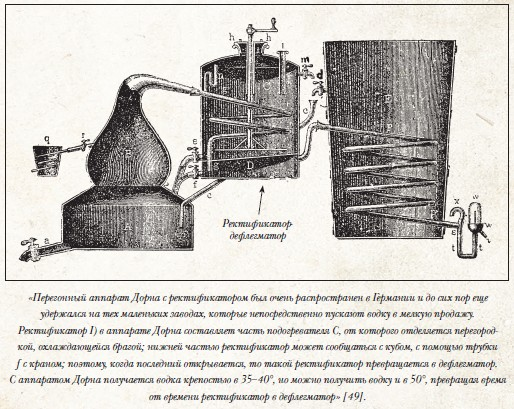
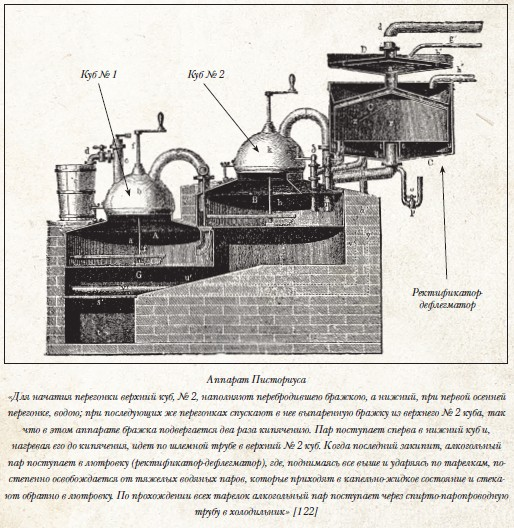
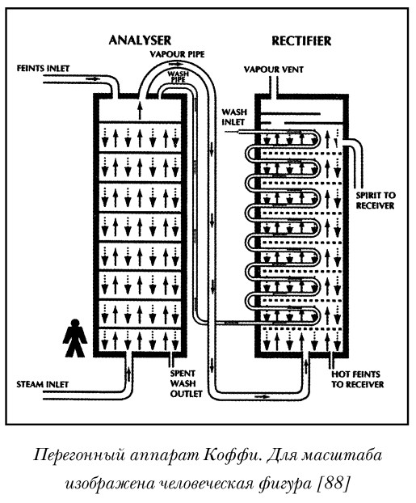
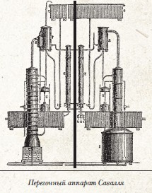
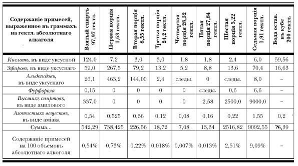
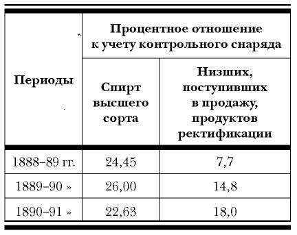
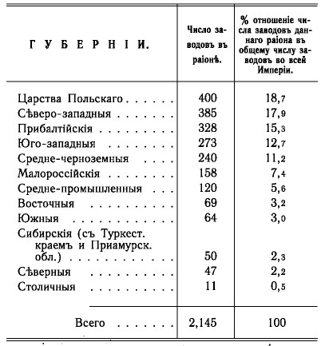
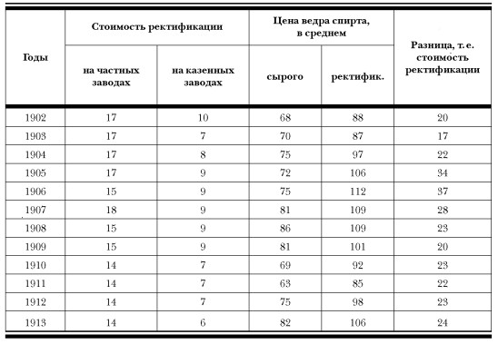

Техническая революция XIX в. и алкогольные дистилляты

Мы идем своим путем
Прежде чем двинуться дальше, в послереволюционную Россию, еще раз взглянем на век девятнадцатый, но под несколько иным углом зрения. Мы уже говорили, что научно-техническая революция этого века оказала серьезное воздействие на развитие винокурения и производства крепких спиртных напитков в Европе, в том числе и в России. Основным стимулом для изменений было, повторимся, то, что:
«…употребление крепкаго спирта в технике и для других надобностей распространилось до такой степени, что сделалось уже небходимостию устроивать перегонные приборы таким образом, чтобы из перегоняемой браги с перваго же раза можно было получать крепкий спирт» [282]
То есть девятнадцатый век в связи со стремительным развитием техники и технологий создал проблему, и сам же принялся эту проблему — нужно много дешевого спирта для технических целей — решать. Чтобы разобраться в том, каким образом проблема решалась, нам придется снова вернуться к «печке» — к классическому винокурению.
Как мы с вами помним, суть винокурения в том, чтобы сначала получить путем сбраживания растительного сырья спиртосодержащую массу — бражку, затем перевести жидкости, содержащиеся в бражке, в парообразное состояние и, основываясь на разнице в температурах кипения, отделить спирт от воды на стадии конденсации паров. Процесс парообразования с последующей конденсацией паров называется дистилляцией или перегонкой. Дистилляция требует наличия оборудования — как минимум емкости для нагревания бражки, пароотводной трубки и холодильника, в котором происходит конденсация. На определенном уровне развития человечество пришло к такому вот агрегату для перегонки, получившему название перегонного куба. (Разумеется, это принципиальная схема, в каждом конкретном случае конструктивно и по форме перегонные кубы могут различаться, однако сама по себе схема практически неизменна.)

Этот незатейливый аппарат, в разных странах именуемый по-разному (pot still, alambique, перегонный куб), безотказно служил человечеству столетиями, причем так же исправно служит он и в настоящее время: именно с его помощью вырабатывают лучшие сорта коньяков и виски, а также всевозможные палинки и сливовицы. Проблем у простого перегонного куба две: во-первых, за одну перегонку можно получить водно-спиртовую жидкость крепостью не более ~25°, так что для получения привычного по крепости напитка необходимо сделать как минимум две перегонки; во-вторых, даже множественная перегонка не помогает получить практически чистый спирт крепостью выше, чем ~ 90–92°. Связано это с тем, что в процессе перегонки в отгон частично переходят и вода, и различные примеси, такие как сивушное масло и пр. Когда нет необходимости получать чистый спирт, проблемы, в сущности, невелики, достаточно сделать две перегонки: в процессе первой из браги извлекается весь спирт, вторая же в основном «посвящается» отделению примесей, большая часть которых находится в головной и хвостовой частях дистиллята. То есть уже вторая перегонка по сути есть ректификация, очистка от примесей (хотя так сложилось, что при одно-кубовой дистилляции ректификацией принято называть перегонки начиная с третьей). В итоге двух перегонок получается водно-спиртовая жидкость такой концентрации и с таким количеством примесей, которые вполне позволяют употреблять ее в виде напитка, обладающего вкусом, определяемым исходным сырьем. Если же требовалось получить более крепкий и более очищенный от примесей спирт, производили все новые и новые перегонки, отчего подобный вид дистилляции получил название дробной. При этом винокуры, как правило, ограничивались двумя, максимум тремя перегонками, так как их задачей было получение напитка как такового.
«В прежнее время заводчики довольствовались выходом водки крепостью не более как в 50 % по Траллесу, требование, которому вполне удовлетворяли бывшие тогда в употреблении перегонные кубы; для получения же продукта высшей крепости, водку подвергали вторичной перегонке или ректификации, но этой последнею операциею сами заводчики не занимались и nonplusultra(то есть предел) их искусства состояло в делании обыкновенной водки» [283]
Здесь мы сделаем небольшое отступление. Во-первых, автор девятнадцатого века несколько погорячился, употребив прошедшее время: и по сию пору делание таких напитков, как коньяк, виски или, скажем, текила, составляет non plus ultra многих и многих винокуров. А во-вторых, впервые мы встретились с довольно неожиданным значением слова «водка». Этому многоликому и многозначному термину будет посвящена целая глава. Здесь же отметим, что в середине девятнадцатого века в России появилась тенденция употреблять слово «водка», которое в прежние времена означало напиток, изготовленный из хлебного вина, как правило, с использованием каких-либо ингредиентов, как термин, обозначающий крепкие напитки-дистилляты вообще, и, в частности, как синоним «хлебного вина». В данном случае переводчик перевел стоящий в оригинале термин spiritus словом «водка», хотя в этом контексте речь идет именно о «хлебном вине». Тенденция использовать слово «водка» как некий интегральный термин во второй половине девятнадцатого века проявляется весьма отчетливо. Причем это ни в коей мере не касалось официальных документов — там эти понятия никогда не смешивались, так как хлебное вино, как чистая спиртовая жидкость, и водка, как водочное изделие, допускающее в своем составе добавки «не являющиеся продуктом винокурения», облагались существенно разным акцизом. Другое дело — словари. Например, в Брокгаузе слово «водка» выступает как синоним хлебного вина и вместе с тем как термин, обозначающий соответствующее водочное изделие. А некоторые авторы шли еще дальше.
Так, экономист XIX в. В. К. Дмитриев[284] называет водками даже все зарубежные крепкие напитки-дистилляты, т. е. и коньяк, и виски и т. д. Мы же в своем изложении будем пользоваться терминологией, принятой в официальных документах — так проще и точнее.
И еще, уж коли мы заговорили о терминах. В чем разница между понятиями «вино» и «спирт»? Озаботившись этим вопросом, Технический комитет
«нашел возможным ввести в Питейный устав в форме примечания определение, что спирт, употребляемый как напиток, называется „вином“».
Так или иначе, но спирта для промышленности требовалось все больше и больше и, по возможности, более дешевого. У конструкторов возникла идея объединить первую и вторую перегонки в один процесс. Принципиальный путь для решения этой задачи сформулировал голландский медик Боергаав, который
«первый обратил внимание на необходимость устройства дефлегмационных приспособлений, к перегонному аппарату; он указал, что дистилляционный аппарат должен быть так устроен, чтобы пары перегоняемой жидкости, при своем проходе встречали как можно больше препятствий, дабы во время этих замедлений могло бы произойти лучшее разделение более летучих частей (кипящих при низших температурах) от менее летучих (имеющих более высокую точку кипения)» [285]
Типичный пример такого устройства первоначального типа — аппарат Дорна.

Как видим, задача объединить две перегонки в одну здесь решена за счет установки между кубом и холодильником дополнительного устройства — ректификатора-дефлегматора. К этому же типу перегонных аппаратов относится несколько более сложный конструктивно аппарат Шварца, в котором ректификатор и дефлегматор являются, в отличие от аппарата Дорна, отдельными устройствами. Мы приводим здесь схему этого аппарата потому, что он одним из первых подобных устройств получил распространение в России еще в 50-е годы XIX века.[286]
Но поскольку аппараты такого типа давали спирт крепостью всего лишь не более 50–60°, постольку конструкторская мысль двигалась дальше. Следующим принципиальным шагом было последовательное соединение двух бражных котлов.

При такой схеме спиртовые пары из первого котла поступают во второй и, доведя бражку в нем до кипения, дополнительно обогащаются спиртом. Этот обогащенный пар поступает в дефлегматор и ректификатор, а затем в холодильник. Двухкубовые перегонные аппараты, позволяющие получать спирт крепостью около 80–85°, «царствовали» в русском винокурении на протяжении более четверти века: с конца пятидесятых до конца восьмидесятых годов XIX века. Наиболее распространенной конструкцией был аппарат Писториуса. Вот что писал о нем автор — винокуренный заводчик из Ревеля Линкгрейм в 1897 г.:
«Этот аппарат долгое время употреблялся в наших губерниях и можно было встретить его, лет 15 или немного более назад, почти на каждом винокуренном заводе. На некоторых заводах аппараты эти употребляются по настоящее время» [287]
Все приведенные выше аппараты относятся к классу периодически действующих, так как после каждой сгонки требуют остановки для отвода барды и загрузки новой порции бражки. Следующая ступень конструкторской мысли — аппараты непрерывного действия. О принципе их работы рассказывает все тот же автор конца XIX в.:
«Второй вид перегонных аппаратов устроен так, что бражка поступает в них не порциями, как в раньше описанных аппаратах, а непрерывною струею во все время перегонки, так что переработанная, лишенная алкоголя бражка или барда, вытекает непрерывно из аппарата. Само собою разумеется, что приток бражки должен быть регулирован так, чтобы аппарат успевал переработать доставляемое насосом количество бражки» [288]
Этот вид перегонных устройств позволил:
Во-первых, повысить крепость непосредственно получаемых из бражки спиртов до ~90 %,
Во-вторых, сделал процесс перегонки действительно непрерывным.
Первым из таких непрерывно действующих аппаратов был запатентованный в 1830 г.[289] аппарат Коффи. Мы приводим здесь его схему, которая поможет любознательным читателям разобраться в принципе действия непрерывно действующих перегонных устройств. Аппарат Коффи до сих пор успешно применяется в Шотландии для получения зернового виски. В России же он появился в 60-е годы. Как пишет Кропоткин, «аппарат Коффея был введен на многих заводах в России», [290] хотя в силу внушительности размеров (на рисунке для масштаба приведена фигурка человечка) подходил только для крупных предприятий.

И еще одна легендарная конструкция: перегонный аппарат Савалля. Вновь обратимся к князю Кропоткину:
«На парижской всемирной выставке 1867 года был выставлен перегонный аппарат фирмы Савалля (Savalle fils et comp.), удостоенный высшей награды и получивший восторженный отзыв от международного жюри, которые признали, что с этим аппаратом достигнута наивысшая степень совершенства в искусстве дистилляции и ректификации. Такой лестный отзыв и газетные рекламы быстро прославили этот аппарат, так что он мало-помалу стал вытеснять из водочных заводов все старые ректификационные снаряды; винокуренные же заводы не очень-то доверились восторженным рекламам и предпочли выждать практических результатов, которые не замедлили показать, что аппарат Савалля представляет действительно значительное улучшение в дистилляционном деле, но далеко не есть наивысшая степень совершенства, достигнутая в дистилляции, как прокричали усердные рекламы. Только этими неуместными рекламами можно объяснить то обстоятельство, что аппарат Савалля, имея много преимуществ перед другими, встретил критиков, которые безусловно отрицали в нем всякие достоинства» [291]

С аппаратом Савалля в России произошла вот какая история. На рисунке отчетливо видно, что он состоит из двух практически независимых частей: слева — бражная колонна, предназначенная для перегонки браги, справа — ректификационная. Так вот, левая (бражная) часть в России, что называется, «не пошла», а правая (ректификационная) на долгие годы получила широчайшее распространение.
Объяснение этому очень простое: перегонный аппарат Савалля был предназначен исключительно для жидких бражек, что в российских условиях было очень неудобно — заторы надо было разводить значительно больше, чем обычно, да еще и фильтровать (кстати, это относится и к аппарату Коффи). Зато ректификационная колонна была сконструирована крайне удачно. Разумеется, сказанное не означает, что от аппарата Савалля «откручивалась» ректификационная колонна, а бражная просто выкидывалась.
«На этих аппаратах из 100 000 л картофельного спирта-сырца, содержащего 45–50 объемных процентов алкоголя, что равно 45 000–50 000 л алкоголя в 100 %, получаются следующие фракции:
Альдегидного форлойфа около……………150 л
Первого погона 95 % спирт………………3800 л
Очищенного спирта 2-го сорта 96,2 %…2886 л
Очищенного спирта 1-го сорта 96,4 %…35 668 л
Очищенного спирта 2-го сорта 96,0 %…480 л
Последний погон, включая сивушное
масло и сивушную воду……………………1290 л
Потери от ректификации………………726 л» [292]
Просто помимо перегонного аппарата существовал еще и ректификационный аппарат Савалля, который и представлял собою по сути «половину» брагоперегонного.
Надо сказать, что перегонный аппарат Савалля хотя и производил непосредственно из бражки очень крепкий спирт — до 96 %, но
«относительно чистоты спирта» оставлял «желать еще многого, так как он хотя и содержит менее высококипящих продуктов, чем спирт, получаемый на других аппаратах, но он не лишен продуктов более летучих» [293]
Другими словами, при перегонке бражки аппарат плохо справлялся с отделением головной фракции.
Эта задача была решена только в аппаратах следующего поколения. Но прежде чем говорить о них, разберемся с понятием «ректификация» в эпоху «продвинутых» перегонных агрегатов.
Как мы с вами помним, в классической однокубовой дистилляции во время первой перегонки отделения «головных» и «хвостовых» фракций не производилось. В результате получалась так называемая рака, содержащая громадное количество примесей, делавших ее «зело мерзкой» на вкус. Это связано с тем, что задача первой перегонки — выделить из браги весь содержащийся в ней спирт. Фракционирование начиналось со второй перегонки и представляло собой род искусства, так как надо было оставить в получаемой жидкости ровно столько примесей, сколько необходимо для получения оптимального вкуса. То есть рака была промежуточной стадией — собственно продукт получался после второй перегонки. На этом, в общем-то, задача винокура заканчивалась. Все дальнейшие перегонки производились, как правило, уже производителями водочных изделий и назывались ректификацией. Когда же речь идет о перегонке в усовершенствованных аппаратах, при в целом весьма похожей схеме в деталях дело обстоит несколько по-иному: первая и последующие перегонки как бы соединяются в одну. «Как бы» потому, что на практике достичь этого весьма сложно — необходимо выполнить одновременно две противоречивые задачи: извлечь из браги весь спирт и одновременно удалить из него примеси. То есть перегонка в усовершенствованных аппаратах, особенно первоначальных конструкций, не была фракционной, в результате чего продукт винокурения на подобных аппаратах — так называемый спирт-сырец — был по сути «высокоградусной ракой», хотя, естественно, все-таки заметно более чистой, чем рака, так сказать, «однокубовая».
Для иллюстрации сказанного попробуем виртуально сравнить два спирта крепостью, допустим, 80 %: один, полученный способом классической дробной перегонки, другой — в аппарате Писториуса. Восьмидесятиградусный хлебный спирт-сырец содержит от 0,5 до 0,8 % сивушных масел, считая на безводный спирт.[294] Аналогичный продукт, полученный тремя перегонками в простом кубе с тщательным отделением «голов» и «хвостов», будет содержать тех же сивушных масел не более 0,1–0,15 % (по результатам, полученным мной. — Прим. авт. ) Разница по содержанию эфиров и альдегидов будет еще значительнее. И еще одно серьезное обстоятельство: спирт, получаемый в «классике», по содержанию примесей ведет себя значительно более, так сказать, сбалансированно — при каждой последующей перегонке количество примесей уменьшается пропорционально. Никаких перекосов в сторону повышенного содержания той или иной фракции, как, например, в спиртах из аппарата Савалля с их почти полным отсутствием сивушных масел и высоким содержанием альдегидов.
Как мы уже неоднократно замечали, алкогольная дистилляция изначально имеет двоякое назначение: в одном случае — получение непосредственно напитка, в другом — максимально чистого спирта. Для решения первой задачи лучше всего приспособлена классическая дробная дистилляция — во-первых, потому, что позволяет максимально точно, «вручную» регулировать количество примесей, которые определяют вкус напитка, а во-вторых, потому, что это доказано многовековой практикой. Вторую же задачу «классика» решить не в состоянии. Для этого необходима высокотехнологичная «модерн»-дистилляция. В то же время продукция этой самой «модерн»-дистилляции, мягко говоря, не очень подходит для использования в качестве напитка — будет либо «горло драть», если готовить его из низкоградусного сырца, либо, если из высокоградусного, вообще получится ни то ни се. Поэтому спирт-сырец поступал на дальнейшую обработку, именуемую очисткой. Видов очистки было два — «холодная» и «горячая». Холодная очистка представляла собой обработку либо углем, либо различными химическими реактивами (в России в основном ограничивались обработкой углем). Горячая очистка — дальнейшая перегонка, которая, собственно, и именовалась ректификацией. Иногда эти способы комбинировались. Холодная очистка, как правило, производилась пропусканием спирта-сырца, разведенного до 40–45 %, через уголь в специальных батареях. Полученная водно-спиртовая жидкость нормализовалась по крепости и поступала в продажу под названием «очищенное вино».
При ректификации спирт-сырец также разводился до 40–50 % и подвергался дополнительной перегонке, но уже с разделением по фракциям. Как именно происходило фракционирование, видно из таблицы.[295]
Первая и седьмая сгонки представляют собой головную фракцию — первогон, в котором сосредоточена большая часть эфиров и альдегидов, и богатый сивушными маслами погон. Остальные — спирты, которые в зависимости от содержания примесей делились на четыре сорта: 1-й (прима), 2-й и 3-й. Спирт первого сорта, получаемый при повторной ректификации, назывался «прима-прима».

В девяностые годы в России появились так называемые брагоректификационные установки, первой из которых был аппарат Перье. Установки эти давали возможность непосредственно из бражки получать спирт такой крепости и такой степени очистки, что он полностью соответствовал всем требованиям, установленным для ректификованных спиртов.
Теперь, когда мы с вами получили представление о том, как развивались процессы и аппараты винокуренного и спиртоочистительного производства в девятнадцатом веке, можно попытаться проследить, как все эти нововведения приживались в России и каким образом они отразились на русском винокурении. Здесь надо оговориться, что, рассуждая о техническом перевооружении, мы будем в основном говорить о перегонных и ректификационных аппаратах, так как именно от их совершенства зависит возможность выпускать в больших объемах высокоочищенный спирт-ректификат, что наряду с правительственной политикой сыграло решающую роль в исчезновении русского «хлебного вина». Остальные технические усовершенствования, такие как, например, механизация процесса затирания и пр., нас будут интересовать значительно меньше.
Первые довольно робкие попытки применения усовершенствованных перегонных аппаратов относятся к концу сороковых годов XIX века, то есть в доакцизный период. Интересные данные по этому поводу приводит К. И. Юрчук для Ярославской губернии:
«Внедрению новой техники на ярославских заводах способствовала деятельность губернского механика Мейшена, назначенного в Ярославскую губернию в 1844 г. (в числе первых четырех таких специалистов, направленных также во Владимирскую, Тверскую и Рязанскую губернии). С момента назначения и до 1861 г. Мейшен побывал на 14 винокуренных заводах, причем на некоторых неоднократно (на заводе кн. Волконского в Мологском у., двух заводах кн. Голицына, заводах Шестажовой и Свечина в Ярославском у., Жемчужникова в Рыбинском у., Левашева в Пошехонском у., Хомутова, Васильева, Трушинского, Багговут, Федорова и двух заводах Зацепина в Романово-Борисоглебском у. Для завода Хомутова в с. Никольском Романово-Борисоглебского у. Мейшен составил в 1851 г. план и смету на строительство завода и водяной мукомольной мельницы. Завод должен был получить оборудование по системе Шварца. Мейшен в 1852 г. устроил два винокуренных завода в имении Зацепиных в Ярославском уезде, один из них — в с. Новом — по системе Фишера. Винокуренный завод Д. Васильева в Романово-Борисоглебском, неоднократно осмотренный Мейшеном, был устроен по системе Шварца. Для этого завода Мейшен составил план картофелетерочной машины. Завод Багговут в том же уезде был устроен по системе Шварца, а завод Трущинского — по системе Сиверса с помощью Мейшена. Он освидетельствовал вновь устроенные или перестроенные заводы, устанавливая их возможную мощность — Левашева (Пошехонский у.), Жемчужникова (Рыбинский у.) в 1859 г., кн. Волконского (Мологский у.) в 1861 г. Из 14 заводов, устроенных и оборудованных с помощью Мейшена, 10 — паровые (о четырех нет сведений) и не менее 5 имели ректификаторы или дефлегматоры» [296]
Здесь интересно то, что модернизацию активно пропагандировали и внедряли губернские чиновники, то есть государство, которое, следовательно, было в этой модернизации заинтересовано. Более того, когда после отмены крепостного права была упразднена дворянская монополия на винокурение и стали быстро возникать новые винокуренные заводы, государство позаботилось о том, чтобы они были достаточно крупными.
«Наименьший размер для винокуренного завода полагается в двести семьдесят ведер емкости всех квасильных чанов в совокупности. …Устраивать заводы меньшего размера не дозволяется» [297]
Естественно, что на крупных заводах выгоднее было ставить более производительное оборудование. Именно в этот период большинство новых заводов оборудовались двухкубовыми аппаратами Писториуса. Кое-где на особо крупных предприятиях монтировались непрерывно действующие аппараты Коффи. Кстати, новые заводчики быстро почувствовали прибыльность больших предприятий.
«Я всегда был и буду такого мнения, что рано или поздно наступит время, когда сильные заводы задавят маленьких и они сами собою уничтожатся, будучи не в состоянии конкурировать с большими», — писал в 1872 г. в частном послании сибирский винокур А. С. Юдин своему племяннику Геннадию, тоже винокуру и водочному заводчику.[298] (Впоследствии, как мы помним, акцизную систему упрекали в том, что она способствовала развитию крупных заводов и практически уничтожила мелкое сельскохозяйственное винокурение. Однако эта статья в уставе появилась еще до введения акциза.)
Помимо укрупнения и модернизации винокурения государство было заинтересовано в развитии очистки спирта, причем мотивы этого недвусмысленно сформулированы в Трудах Технического комитета:
«Министерство финансов всегда стремилось к тому, чтобы развить в России дело ректификации спирта. Еще в 1865 году было установлено отчисление трехпроцентной премии на очистку и перегонку спирта, вывозимого за границу. Эта мера была направлена к тому, чтобы предоставить возможность русскому спирту выступить на мировой рынок, где преимущество имели гамбургские заводы, дававшие очищенный спирт высокого качества. В 1883 году льгота была еще увеличена, так как сверх трехпроцентного отчисления, которое предоставлено было всем отправителям спирта за границу, было установлено отчисление еще трех процентов для спирта крепостью не ниже 95 %. 21 июня 1888 года при Департаменте Неокладных Сборов было образовано Совещание по вопросу об очистке спирта и вывоза его за границу. В Совещании было обращено внимание на необходимость принять меры для развития очистки спирта, потребляемого населением. В целях поощрения спиртоочистительного дела было установлено, чтобы при очистке спирта перегонкою в возмещение происходящих при этом потерь слагался акциз в размере в 1 1/4 % на все продукты ректификации или 1 1/2 % на количество прошедшего через контрольный снаряд ректификованного спирта. Кроме того, было установлено сложение акциза за отбросы богатые сивушными маслами с тем, чтобы таковые отбросы подвергались уничтожению в присутствии лиц акцизного надзора» [299]
Обратите внимание: об очистке речь зашла уже в 1865 г., в заботе о конкурентоспособности на мировых рынках. Тогда как мотив о «народном здравии» возникает только в 1888 г., в период подготовки монополии.
Мы вынуждены так много говорить о правительственной политике, потому что именно государство было главным инициатором винокуренной «перестройки». Вводя акцизную систему, правительство, естественно, думало о том, как увеличить поступление дохода в казну и перекрыть всякие возможности безакцизного производства спирта. Отсюда стремление к укрупнению производства: гораздо легче следить за двумя тысячами крупных предприятий, чем за десятком тысяч мелких. Тем более что с 1868 г. на всех винокуренных заводах вводились (за счет казны) в обязательном порядке приборы, отслеживающие крепость и количество выкуриваемого спирта, — «контрольные снаряды».
«На всех винокуренных заводах обязательно употребление контрольных снарядов для учета выкуренного вина» [300]
Это, в свою очередь, привело к тому, что правительство озаботилось еще одной проблемой — заставить заводчиков постоянно повышать крепость выкуриваемого спирта, так как это значительно уменьшало возможность ухода от налогов. В тех же Трудах Технического комитета читаем:
«Общее возвышение средних крепостей выкуриваемого спирта на непрерывно-действующих и кубовых аппаратах должно быть объяснено как техническими, вводимыми заводчиками, улучшениями в приемах производства винокурения, так и акцизными требованиями о выкурке более крепкого спирта, вызываемыми теми соображениями, что при высших крепостях выкуриваемого спирта сокращаются пределы манипуляции с контрольными снарядами» [301]
Словом, в заботе о наполняемости казны и захвате европейского спиртового рынка (а там в это время требовался уже чистый спирт) правительство всеми доступными методами подталкивало винокуров к укрупнению предприятий, повышению крепости выкуриваемого спирта и развитию спиртоочистного дела.
(Правда, с укрупнением, как выяснилось, «хватили лишку». Когда мелкое хозяйственное винокурение почти уже исчезло, спохватились и укрупняться далее запретили.
«Винокуренные заводы, которые будут устроены после 1 июля 1890 года, не должны иметь совокупную емкость квасильных чанов свыше девяти тысяч ведер. Существующим заводам меньшего размера воспрещается увеличивать совокупную емкость квасильных чанов свыше указанного размера» [302])
Таким образом, в 60–70-е годы в технической оснащенности винокуренных заводов в части перегонных аппаратов произошло фактически одно изменение: на крупных заводах стали устанавливать конструкции, позволяющие за одну перегонку получать спирт крепостью до 85°. Практически это никак не повлияло на конечный продукт: этот спирт, разведенный до 40 %, давал то же самое «простое вино», которое в одно-кубовых аппаратах получалось после второй перегонки и нормализации по крепости. А как же обстояло дело с очисткой? Так же как в «классике»: спирт неудачной сгонки очищали, как правило, «холодным способом», то есть обработкой углем (иногда, правда, пытались применять и химические методы, но редко.[303])
Правда, вместо того чтобы засыпать уголь непосредственно в вино, стали делать из бочек нечто вроде фильтрационных батарей.
«Для очищения спирта или водки берется бочка в 1/2 аршина в диаметре и в 2 1/2 аршина вышины; она ставится вертикально. Бочка делается с двойным дном; внутреннее дно продырявлено, и находится на расстоянии 3 вершков от внешнего дна. Близь цельного дна привешивается кран для спуска жидкости на продырявленное дно, кладется слой соломы, лучше крупно-изрубленной, а на нее слой речного песка или мелких речных голышей и хорошо промытых; вместо соломы лучше употреблять толстое грубое сукно или плотную парусину. Сверх песку и голышей насыпается уголь, истолченный кусочками в величину ячменного зерна. На уголь насыпается опять слой песку, закрывается полотном или сукном, которое прикрепляется к внутренним стенкам посредством обруча. Описанные слои песку и угля должны занимать пространство немного менее половины всей высоты бочки. Несколько таких цедильных бочек ставятся рядом на довольно значительном возвышении, перед ними у самых нижних днов помещается еще ряд таких же бочек по меньшей мере около 1 1/2 аршина вышиной и около 1/2 аршина в диаметре. Эти нижние бочки точно так же, как и верхние наполняются слоями соломы, песку и угля, не доводя на 3–4 вершка до краев. На слой песку точно так же кладется сукно или полотно, укрепляемое обручем. Каждая из нижних бочек закрывается деревянною крышею, имеющей небольшое отверстие, чрез которое проходит кран верхней бочки для выпуска спирта. Из резервуара, помещенного над первыми бочками, спирт посредством крана течет сперва в верхние бочки и наполняет их до краев; из этих бочек, пройдя чрез уголь и песок, краном вытекает в подставленные сосуды» [304]
«Горячую» очистку использовали водочные заводчики, чтобы получать «безсивушный» спирт для выделки «тонких» напитков: сладких водок и ликеров. Использовались для этого небольшие перегонные кубы, оборудованные ректификационными и дефлегмационными приспособлениями. Например, уже упомянутый заводчик Геннадий Юдин заказал в 1868 году «медный куб емкостью 20 ведер с тарелками, колпаком и холодильником» [305]
Можно ли было в этих условиях получать высокоочищенный и высокоградусный спирт? В принципе можно, используя принцип той же дробной перегонки по схеме: получил 80–85 %-ный спирт — развел до ~ 40 % — очистил углем — вновь перегнал — снова развел до ~ 40 % — опять очистил — перегнал — еще раз перегнал уже без угольной очистки и предварительного разведения. Некоторые заводчики, поощряемые трехпроцентной премией, так и поступали, очищая спирт для вывоза за границу. Однако количество ректификованного (очищенного «горячим способом») спирта в 60–70-е годы составляло ничтожный процент. Об этом можно судить хотя бы по тому, что в 1889 г., то есть гораздо позже, уже после появления в России ректификационных аппаратов Савалля, изменений питейного Устава в 1865 г. и установления в 1888 г. дополнительных премий за очистку, из общего количества потребленного хлебного вина (считая на безводный спирт) 25 140 777 ведер ректификованного спирта было всего лишь 1 353 512 ведра, то есть около 5 %.[30, 5]
В целом период 60–70-х гг. был прямым продолжением традиции русского классического винокурения — в общем объеме потребляемых напитков-дистиллятов подавляющий процент принадлежал хлебному вину, производимому по канонической винокуренной технологии. Правда, как мы уже говорили, именно в этот период впервые появляется продукт, который, так сказать, «идеологически» является предшественником современной водки — так называемое «столовое вино». Кому-то из водочных заводчиков пришла в голову мысль о том, что уж если существует такая экзотическая штука, как 95 %-ный высокоочищенный спирт, почему бы не сделать на его основе такой же экзотический продукт? Так появилось «столовое вино», представляющее собой смесь ректификата с водой, пропущенные через угольный фильтр. О том, в каких количествах оно выпускалось, свидетельствует тот факт, что, например, в общем объеме вина, изготавливаемого фирмой Петра Смирнова, даже в лучшие годы столовое вино высшей очистки составляло 0,2 %.[307]
В восьмидесятые годы произошли два существенных события: техническое и административное. С технической стороны в русском винокурении стали внедряться так называемые колонные аппараты непрерывного действия, достаточно компактные, приспособленные для работы с густыми бражками и позволяющие получать спирт 90–95 %,[53,122] а в очистном деле — ректификационные аппараты Савалля, значительно упростившие процесс ректификации.
Другими словами, в России впервые появилась техническая возможность получать относительно дешевый спирт-ректификат. Однако этой возможностью никто не спешил воспользоваться. На вопрос «почему?» ответ будет дан чуть позже, а сейчас поговорим о событии административном — введении с 1885 г. «Новых правил о приготовлении и продаже водочных изделий, очищенных вина и спирта и морсов, содержащих спирт».
Для правительства было очень важно максимально разделить производство спирта, его очистку и приготовление водочных изделий, так как для каждого из этих видов деятельности был установлен свой акцизный и патентный сбор. То есть, например, если водочный заводчик хотел кроме выделки водок еще и производить очистку спирта для продажи, то помимо патента на производство водочных изделий он обязан был брать патент еще и на очистку спирта. Фактически этому разделению (так же как и ужесточению правил продажи напитков) и были посвящены «Новые правила»[309]
В соответствии с ними винно-водочная промышленность окончательно делилась на собственно винокуренную (производство спирта) и водочную. Особого внимания заслуживает пункт, запрещающий винокурам использовать при производстве спирта различные ароматические травы. В редакции Устава от 1861 г. было записано:
«На винокуренных заводах не дозволяется иметь особых перегонных аппаратов для перегонки вина через травы, ягоды и другие припасы» [310]
В новой редакции эта фраза была дополнена словами
«и воспрещается класть сии припасы в бражный куб или иной аппарат, состоящий в прочной связи с перегонным аппаратом» [311]
Что это означало? Мы с вами помним, что перегонка вина с использованием различных ароматных трав была традиционным приемом русских винокуров, в результате чего вино на винокурнях производилось часто ароматизированным, с различными вкусовыми оттенками. Теперь же, под предлогом того, что якобы таким приемом часто маскировались «вредные примеси», винокуров окончательно отделили от конечного потребителя, превратив в изготовителей промежуточного продукта — спирта-сырца.
Короче говоря, на протяжении менее чем тридцати лет существования акцизной системы правительство наносило удар за ударом по традиционному русскому винокурению, всеми силами подталкивая винокуренную промышленность к переходу на производство высокоочищенного спирта. Однако проблема (правительства) состояла в том, что внутри страны спирт-ректификат был, в сущности, никому не нужен. На Западе спирт высшей очистки был востребован промышленностью, кроме того, использовался для приготовления «ликеро-водочных изделий». В России же потребности промышленности были почти нулевыми, а «водочных изделий», в отличие от Европы, вырабатывался ничтожный процент от общего производства крепких напитков, так как предпочитали пить «хлебное вино». В Трудах Технического комитета за 1900 год утверждается:
«В Западной Европе хлебное вино, т. е. смесь спирта с водой, сравнительно мало распространено. В большом ходу различные настойки, наливки и ликеры, которые в нашем законодательстве носят общее название водочных изделий…» [312]
В этом тексте удивительным образом правда сочетается с изрядной долей лукавства. То, что в Европе на изготовление «водочных изделий» шел значительно больший, нежели в России, процент от выкуриваемого спирта — чистая правда. А вот то, что «хлебное вино — смесь спирта с водой», — лукавство. Это «монопольное вино» представляет собой смесь спирта с водой. А традиционное хлебное вино — напиток из того же ряда, что и коньяк и виски, которые никак не относились к «простой смеси спирта с водой». В Европе же традиционные дистилляты — коньяк, виски, бренди, шнапсы и пр. — всегда пользовались огромной популярностью, чего не скажешь о «смеси спирта с водой», европейцы в девятнадцатом веке совершенно не воспринимали эту жидкость как напиток.
В общем, ситуация, сложившаяся к концу восьмидесятых годов в российской винно-водочной промышленности, выглядела следующим образом: с одной стороны, с появлением ректификационных аппаратов Савалля появилась техническая возможность производить относительно дешевый и чистый спирт; с другой же — производители вовсе не стремились эти аппараты использовать и переходить на производство ректификата, даже несмотря на то, что в 1888 г. были введены новые льготы по очистке. В 1893 г., то есть за год до введения монополии, в Техническом комитете состоялось совещание, посвященное развитию спиртоочистительного дела в Российской империи. Начав, как водится, с бодрых рапортов «о повышении», участники совещания пришли в итоге к выводу, весьма неутешительному для этого самого «спиртоочистительного дела».
Закон о мерах к развитию спиртоочистительной промышленности высочайше утвержден 21 июня 1888 года. Существенными льготами этого закона по очистке спирта явилось сложение акциза за утрачиваемое количество спирта при его перегонке и за остающиеся отбросы ректификации, богатые сивушным маслом. Таким образом, сей закон вступил в силу в период 1888–89 гг., когда вообще числилось во всей России 227 заводов, производивших очистку спирта горячим способом.
В период 1889–90 гг., по сравнению с предшествовавшим периодом, как общее число заводов, производивших горячую очистку спирта, так и число заводов, пользовавшихся льготами закона 21 июня 1888 года, увеличилось; первых действовал 251 завод, т. е. более предшествовавшего периода на 24 завода, а вторых — 100; превысив, таким образом, цифру предыдущего периода 27 заводами. Всеми 100 заводами, пользовавшимися льготами по очистке спирта, было взято, в продолжение всего периода 1889–90 гг., на ректификацию 369 480 247 град. сырого спирта, т. е. на 144 181 706 град. более того количества, которое было ректификовано в предшествовавшем периоде.
Далее, в период 1890–91 гг., общее число заводов, производивших горячую очистку спирта, составляло 240 (Выделено авт.); хотя, по сравнению с периодом 1890–1891 гг., оно и уменьшилось на 11 заводов, но, в сравнении с периодом 1888–1889 гг., все-таки было больше на 13 заводов.
… Рассматривая статистические данные относительно поступающих в продажу продуктов спирторектификационных заводов, пользующихся льготами, нельзя не обратить внимания на то явление, что, несмотря на увеличение количества ректификованного спирта, процент лучшего сорта спирта не увеличивается, а напротив — уменьшается; количество же поступающих в продажу низших продуктов ректификации увеличивается; так, процентное отношение спирта первого сорта и низших, поступивших в продажу продуктов ректификации к количеству спирта, учтенному контрольным снарядом на спирторектификационных заводах, пользующихся льготами, выражается по периодам следующими цифрами:

Сопоставляя вышеприведенные данные относительно потери спирта при ректификации, количества поступающих в продажу спирта лучшего качества и низших сортов, продуктов ректификации и также процента уничтожаемых отбросов, едва ли можно признать развитие ректификационного дела вполне нормальным или по крайней мере утверждать, что дело это развивается в том направлении, в каком это было бы желательно [313]
Здесь интересны даже не столько выводы, сделанные на совещании, сколько приведенные цифры. То есть за пять лет до введения монополии из более чем трех тысяч заводов винно-водочной промышленности (2144 винокуренных + водочные)[314] горячей очисткой (ректификацией) занимался 241 завод, то есть около 6–7 %. Количество ректификованного спирта, поступающего на внутренний рынок, составляло приблизительно 5 %.[315]
В 1894 г., непосредственно перед введением монополии, ситуация выглядела так:
«В 1894 году за год до начала введения казенной продажи питей, дело очистки вина находилось в следующем положении: всего было 4105 мест очистки вина, причем 3772 места или 91,9 % очищали спирт холодным способом и 331 место, или 8,1 % — горячим. В 1894 году было выкурено 29 925 тыс. ведер спирта, израсходовано на местное потребление 24 268 тыс. ведер безводного спирта. Количество сырого спирта, подвергнутого ректификации, составляло 7980 тыс. вед., вывезено за границу 2256 тыс. вед., 445 тыс. вед. пошло на изготовление водочных изделий, для коих спирт обыкновенно подвергался ректификации, равно как и спирт, вывозимый за границу. Если вычесть эти две величины из общего количества спирта, подвергнутого ректификации (пренебрегая тратами) и принять во внимание, что для изготовления духов также применяется ректификованный спирт (всего на выделку духов, лака и политуры пошло 562 395 вед. безводного спирта), то окажется, что для местного потребления подвергнуто горячей очистки около 5 милл. вед., что составит менее чем одну четвертую часть потребленного спирта; следовательно, около 3/4 вина потребленного в стране подвергалось частью только холодной очистке, частью же совсем не подвергалось очищению» [316]
Причем часть этого «ректификата» парадоксальным образом была богаче сырого спирта по содержанию примесей. Объясняется это тем, что
«водочные заводчики пускают в обращение, особенно в сдобренном виде, вторые и третьи продукты ректификации, предназначая первый продукт (более чистый спирт) для вывоза за границу» [317]
Можно сколько угодно клеймить «нехороших заводчиков», но поступали-то они вполне логично: за границей для технических целей (в первую очередь) требовался высокоочищенный спирт, а дома потребители предпочитали «грязное» хлебное вино, так зачем же им навязывать чистый спирт? Словом, несмотря на все старания правительства, «внедрить» спирт-ректификат никак не получалось.
А теперь посмотрим в цифрах, как обстояло дело с техническим оснащением собственно винокуренной промышленности накануне введения монополии, благо с 1887 года Технический комитет стал составлять подробнейшие ежегодные отчеты о состоянии буквально каждой винокурни на территории всей Российской империи.
В отчетном периоде 1888/9 гг. в Российской империи действовало 2145 винокуренных заводов, из коих 2100 собственно винокуренных и 45 дрожжево-винокуренных. Заводы эти перекуривали следующие материалы: 1) хлебные припасы и картофель (1485 зав.); 2) хлебные припасы, картофель и патоку (20 зав.); 3) одни хлебные припасы (603 зав., в том числе 45 дрожжево-винокуренных); 4) хлебные припасы и патоку (32 зав.) и 5) одну патоку (5 зав.).
Распределение означенных 2145 заводов по районам, в убывающем порядке их числа, было следующее:

Данные эти указывают, что винокуренная промышленность, по крайней мере по числу действовавших заводов, главным образом сосредоточивалась в западной части государства, где, в губерниях районов Царства Польского, прибалтийского, северо- и юго-западного, находилось 1386 заводов, т. е. 64,6 % общего числа всех действовавших заводов в Империи.
В общем числе всех заводов в России преобладают заводы с перегонными аппаратами кубовой системы, составляя 61,5 %; заводов же с перегонными аппаратами непрерывно-действующими только 38,5 %.
Данные, приведенные в общей статистической ведомости в рубрике «с перегонными аппаратами», показывают, что из всех 826 заводов, производивших выкурку спирта на непрерывно-действующих перегонных аппаратах, 698 заводов располагали аппаратами одноколонными, составляя таким образом 84,5 % указанного выше общего числа (826) заводов; остальные 15,5 % распределялись так: на 82 заводах (т. е. 9,9 %) аппараты были двухколонные; на 44 (т. е. 5,4 %) действовали аппараты системы Ильгеса и наконец на 2-х заводах (т. е. 0,2 %) — аппараты системы Коффея.
Из общего же числа 1318 заводов, действовавших при аппаратах кубовой системы, значительное большинство, а именно 1220 (т. е. 92,6 %) заводов имели двухкубовые аппараты системы Писториуса, причем на 953 заводах (78,1 %) означенные аппараты были снабжены дефлегмационными тарелками, но ректификационной колонки не имели; аппараты же остальных 267 заводов (21,9 %) имели, кроме дефлегмационных тарелок, еще и ректификационные колонки.
Затем из остальных 98 заводов, действовавших с кубовыми аппаратами, на 60 заводах находились аппараты системы Галля, а на 38 — аппараты однокубовые, что, в общем числе (1818) кубовых заводов, составляет для первых — 4,5 %, а для вторых — 2,9 % [318]
Этот статистический отчет ясно показывает, что винокуренная промышленность России никак не была ориентирована на производство высокоочищенного спирта. Была небольшая ниша производителей спирта-ректификата для вывоза за границу (то самое 331 «место», занимавшееся очисткой спирта) — не более того.
И вот в этой ситуации начинается подготовка к введению монополии и принимается решение производить ВСЕ «монопольное» вино из ректификованного спирта. Однако давайте сначала до конца поймем, что же тогда понималось под «ректификованным спиртом». На внутреннем рынке ректификованным назывался любой спирт, прошедший горячую очистку. Скажем, спирты 2-го и 3-го сортов, получаемые в процессе ректификации, зачастую содержали гораздо больше примесей, нежели сырые спирты, но тоже считались «ректификованными». Достаточно четкий норматив на спирт-ректификат был только в таможенной службе: крепость продукта должна быть не ниже 95 %, и он должен выдерживать пробу серной кислотой, которая определяла общую чистоту спирта. Именно этот норматив и принят был монополией для изготовления своих «питей», причем даже в более жестком варианте:
«1) Спирт должен иметь крепость не ниже 95 %; спирты крепостью в 94 % допускаются лишь с соответствующей уступкой в цене.
2) Спирт должен выдерживать пробу на чистоту при испытании его серной кислотой удельного веса 1840 в пропорции 10 куб. сан. кислоты на 10 куб. сан. спирта.
3) Спирт не должен содержать посторонних примесей, должен быть бесцветным и не обладать посторонним, несвойственным спирту, запахом или вкусом.
4) Содержание в спирте альдегида не должно превышать 0,0006 грамма альдегида на 100 куб. сан. безводного спирта (что составляет, 0,0008 грамма на 100 граммов абсолютного спирта), причем содержание альдегида определяется по способу, утвержденному Министром Финансов» [319]
Как мы видели, российская спиртоочистительная и винокуренная промышленность были совершенно не готовы к выпуску такой продукции в сколько-нибудь значимом объеме.
Для того чтобы выпускать спирт, соответствующий этим нормативам, «казенной продаже питей» пришлось построить по всей стране множество казенных винных складов и спиртоочистительных заводов, оборудованных по последнему слову техники.
(В начальный монопольный период все очистные отделения казенных предприятий были оборудованы ректификационными аппаратами Савалля, которые впоследствии, по мере развития техники, заменялись на более совершенные — Гийома, Барбе и проч.) Если спиртоочистительные заводы занимались в соответствии с названием исключительно очисткой спирта, то казенные винные склады были фактически заводами, на которых тоже производилась ректификация спирта и, вдобавок, изготавливались собственно монопольные пития — простое (народное) и столовое вина. Другими словами, правительство, не считаясь ни с какими затратами, само взялось за выпуск высокоочищенного спирта. Вместе с тем не ослаблялось и давление на частных заводчиков. При этом использовалась политика не только кнута, но и пряника. Например, часть спирта-сырца монополия отдавала на ректификацию частникам, причем большую часть, несмотря на то что и собственных мощностей вполне хватало, и очистка на частных заводах обходилась значительно дороже, нежели на собственных предприятиях. Подобная политика вызывала недоумение экономистов.
Что касается ректификации, то, как указано раньше, монополия не берется за производства ее на казенных заводах, предоставляя громадное большинство очистки частным заводам, в видах поддержания ректификационных отделений при винокуренных заводах и самостоятельных предприятий по очистке, несмотря на то, что казенные заводы работают дешевле (так, напр., по плану на 1909 г. передавалось казенному заводу и складам для ректификации около 16 мил. в. спирта, а в 1908 г. было передано 14 мил., частным же заводам имелось в виду раздать в 1908 г., — 78 мил., в 1909 г. — 76 мил. В 1911 г. предположено очистить на казенных заводах 16 мил., а 61 мил. в. распределить между частными заводами. Переплаты казны из-за этого направления экономической политики достигают значительных сумм. Это видно из сравнения следующих официальных данных.

Из этих данных видно, что казна обычно платит в последние годы за ректификацию спирта заводчикам почти вдвое больше, чем стоит очистка на казенных заводах. Мало того, покупая у заводчиков ректификованный спирт различными способами: по разверстке, с торгов и хозяйственным способом (очищенного спирта куплено у заводчиков в 1910 г. — 22 мил., в 1911 г. — 23 мил. в., сырого за те же годы — 72 и 73 мил. в.), казна платит за этот спирт дороже, чем за сырой, на количество копеек, значительно превышающее и те высокие цены, которые даются частным ректификационным заводам за очистку. Таким образом, очистка спирта при посредстве винокуренных заводчиков, производимая не специальными ректификационными заводами, обходится казне в 2, 2,5, 3, а иногда даже и в 4 раза дороже, чем очистка на казенных заводах. Чем, как не желанием оказать особое покровительство винокуренным и ректификационным заводчикам, можно объяснить только что указанные факты? С точки зрения казенного интереса и фискальных соображений они непонятны [320]
Это действительно непонятно с точки зрения сиюминутной выгоды. Стратегически же вполне объяснимо: с развитием техники себестоимость очищенного спирта стремительно снижалась, что при переходе всей спиртоочистительной промышленности на производство спирта-ректификата принесло бы казне громадные прибыли. Кстати, во второй половине 90-х годов произошло довольно заметное техническое событие — появление аппаратов Перье — первых, относящихся к классу брагоперегонных, то есть способных получать ректификованный спирт непосредственно из бражки. Правительство сначала колебалось: принимать ли такой спирт в казну по цене ректификата, и распространять ли на него льготы по очистке, или отнести его к спиртам-сырцам. В результате остановились на первом варианте, тем самым стимулируя винокуров приобретать эти дорогостоящие аппараты и переходить уже непосредственно на винокурнях, минуя спиртоочистительную стадию, к производству спирта-ректификата.
Но самое главное то, что с распространением монополии у производителей спирта холодной очистки оставалось все меньше и меньше рынков сбыта своей продукции. Словом, монополия делала все, чтобы в стране производился только высокоочищенный спирт. И в этом, безусловно, была своя логика. Во-первых, фискальная: как мы уже отмечали, производство спирта-ректификата стремительно дешевело, что обещало в ближайшем будущем значительный рост и так немалых доходов казны. Во-вторых, производственная: спирт-ректификат в производстве питей гораздо более технологичен, чем спирты, содержащие сколько-нибудь заметное количество примесей. Последние требуют гораздо более гибкого подхода и практического знания весьма тонких традиционных технологий. Монополия же сделала ставку на ученых, которые были выдающимися специалистами в своей области, но никак не специалистами по изготовлению напитков. Потому-то «казенная продажа питей» так и не решилась заняться изготовлением ликеро-водочных изделий. Но нет худа без добра — русские ученые очень много сделали для разработки технологий «монопольного вина». Эти технологии до сих пор являются базовыми при изготовлении современной русской водки.
Так или иначе, а правительство своего добилось: к концу монопольного периода техническое оснащение русского винокурения резко изменилось. Заглянем в отчет Технического комитета за 1914 год — последний отчет перед введением «сухого закона» и последний вообще отчет Технического комитета.
«…в период 1913–1914 гг. действовало одновременно 3065 перегонных аппаратов на 3029 заводах. Преобладающею системою перегонных аппаратов была непрерывно-действующая система, составляющая 92,79 % числа действовавших перегонных аппаратов; остальные 7,21 % приходятся на кубовые перегонные аппараты. Количество браго-перегонно-ректификационных аппаратов новейших систем, как Ильгеса „Фейн-шприт автомат“, Барбе, Гильома, Раузера и пр., тоже постепенно возрастает и так в период 1912–1913 гг. действовало 44, более периода 1911–1912 гг. на 5 аппаратов, а в рассматриваемый период 1913–1914 гг. действовало их 61, т. е. на 17 аппаратов более, чем было в действии за предыдущий период, причем в это количество не включено 3 аппарата Барбе упрощенного типа и 1 аппарат, переделанный из системы Перье.
На 2777 (т. е. на 97,6 %) непрерывно-действующих перегонных аппаратах сгонялся спирт средней крепостью от 86 % и выше, каковая крепость может быть принята за нормальную при сгонках спирта на непрерывно-действующих аппаратах.
На кубовых аппаратах сгонялся преимущественно спирт крепостью 86–92 % (на 83,3 % и 79,6 % аппаратов), а на непрерывно-действующих аппаратах сгонялся преимущественно спирт крепостью 89–95 % (на 86,3 % и 85,6 % аппаратов). Спирт средней крепостью ниже 80 % в период 1913–1914 гг. ни на аппаратах кубовой, ни на аппаратах непрерывно-действующей системы не сгонялся. Спирт средней крепости свыше 92 % сгонялся на 9,9 % кубовых и 25,4 % непрерывно-действующих аппаратов; спирт крепостью выше 95 % сгонялся лишь на 1,6 % общего числа непрерывно-действующих аппаратов, притом спирт такой сгонялся почти исключительно на браго-перегонно-ректификационных аппаратах новейших систем» [321]
Контраст с 1888 годом разительный. Это — уже винокурение, полностью ориентированное на выпуск спирта-ректификата. Да иначе и быть не могло — в 1904 году монополия распространилась на всю территорию Российской империи и, следовательно, в стране стали производиться пития только из ректификованного спирта.
Был ли подобный переход обусловлен естественным ходом развития? Конечно же, нет. Мы с вами видели, что еще в конце восьмидесятых годов ничто не предвещало никаких резких изменений в характере винокурения: хотя и появилась техническая возможность выпускать высокоочищенный спирт-ректификат, но потребность в нем ограничивалась только экспортом. Внутри страны ректификованные спирты спроса фактически не имели. В качестве питей они практически не употреблялись, а промышленность России, в отличие от европейской промышленности, спирт использовала мало. Так что объяснить стремительный переход русской винно-водочной индустрии на использование исключительно ректификованных спиртов только естественными причинами невозможно. Нужна была заинтересованность в этом государства и, как сейчас принято говорить, «политическая воля».
Так сложилось, что в России совпали два условия: появление технической возможности получения технического спирта в промышленных масштабах и государственная идея использовать эту возможность для перевода всей спиртовой и водочной промышленности на этот продукт. А уж политической воли главному инициатору «спиртовой революции» тогдашнему министру финансов С. Ю. Витте было не занимать. В результате традиционное русское винокурение было уничтожено, зато взамен возникла (правда, под названием «монопольное вино») современная водка как технически регламентированный массовый продукт, и была заложена основа мощной спирто-водочной индустрии, которая практически без изменений просуществовала до 50-х годов двадцатого века. Правда, уже «под руководством» большевиков.
Но об этом — следующая глава.